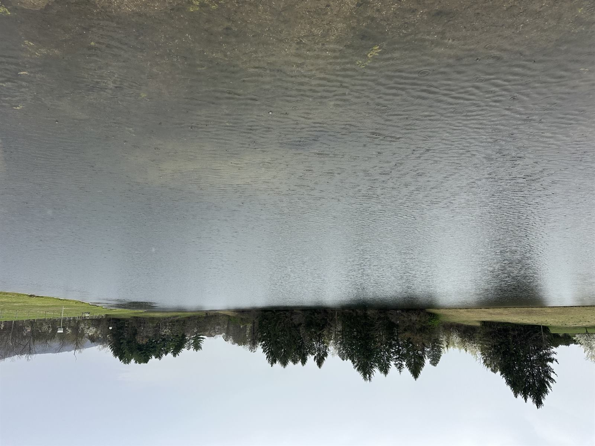

Licensed aquatic vegetation management for ponds, farm ponds, lakes, water features, and constructed wetlands throughout Central Pennsylvania. Algae control, aquatic weed treatments, mosquito larvae management. PA DEP permitting handled when required.
Free Estimate — Call or Text 717-379-3248Aquatic herbicide applications require different products, different label restrictions, different applicator certifications, and additional permitting depending on the water body and what's downstream. Hiring an unlicensed applicator to spray products into a pond can result in fish kills, regulatory violations, and contamination of nearby waterways. We're licensed for aquatic applications and we know when a job needs a permit and when it doesn't.
Filamentous algae, planktonic algae (green water), and chara. We identify the type, treat with the appropriate aquatic algaecide at the right water temperature, and recommend long-term management.
Submerged weeds (pondweed, coontail, milfoil), floating weeds (duckweed, watermeal, water lilies), and emergent weeds (cattails, rushes, sedges). We identify the species before treating — the wrong herbicide on the wrong weed wastes money.
We apply Bti and methoprene larvicides — safe for fish, frogs, birds, dragonflies, and other beneficial aquatic life. The gold standard for mosquito source reduction on rural properties and farms.
For larger ponds or featured assets — spring algae prevention, summer weed control, fall preparation, and ongoing monitoring. Most pond problems are easier to prevent than to fix once severe.
Most aquatic herbicide applications in Pennsylvania require permitting through the PA DEP. Some also fall under EPA NPDES requirements. We handle the permitting process for our clients when required.

We serve Dauphin, Cumberland, Lebanon, Perry, and York Counties — including:
Harrisburg, Paxtang, Penbrook, Steelton, Highspire, Middletown, Hummelstown, Hershey, Palmyra, Annville, Cleona, Lebanon, Grantville, Linglestown, Colonial Park, Susquehanna Township, Lower Paxton, Camp Hill, Mechanicsburg, Lemoyne, New Cumberland, Wormleysburg, Enola, Marysville, Halifax, Millersburg, Elizabethtown, Mount Joy, Mount Wolf, Manchester, Dillsburg, Carlisle, Boiling Springs, and surrounding Central PA communities.
Licensed Pennsylvania aquatic applicator. Permits handled when required. Serving Central Pennsylvania.
Call or Text 717-379-3248